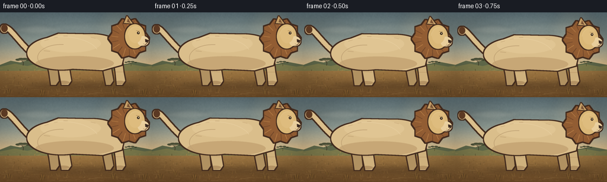
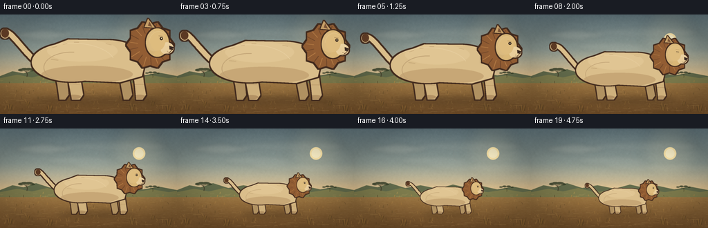
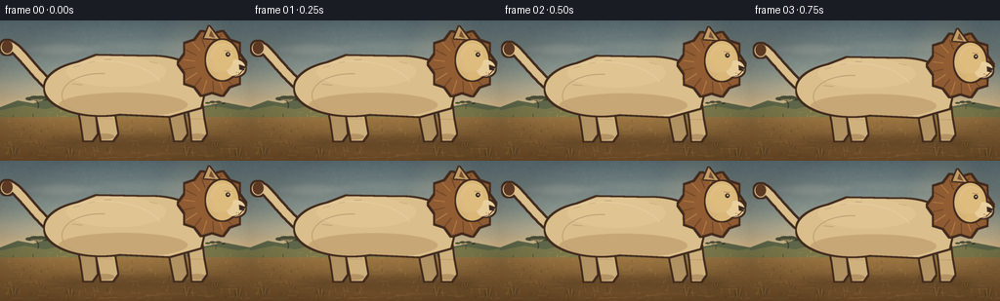
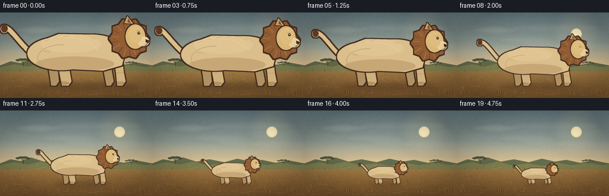
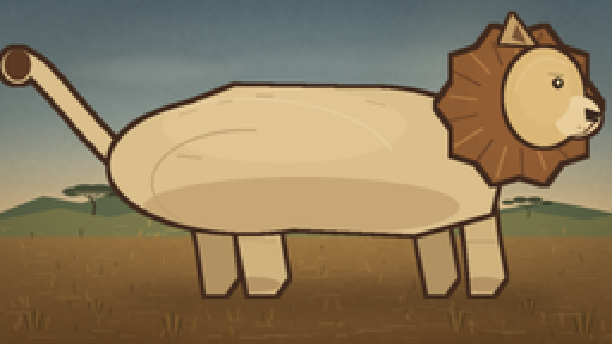
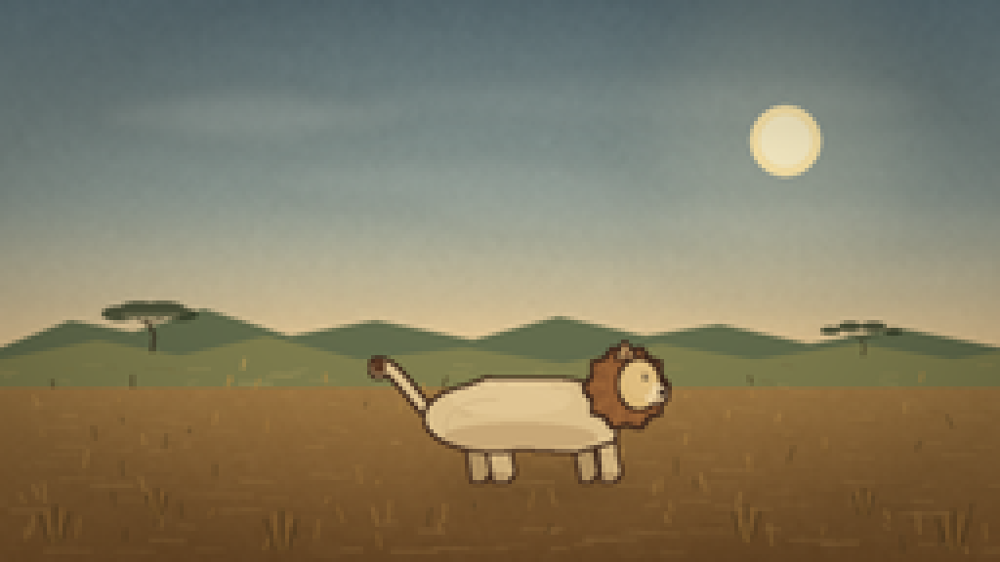
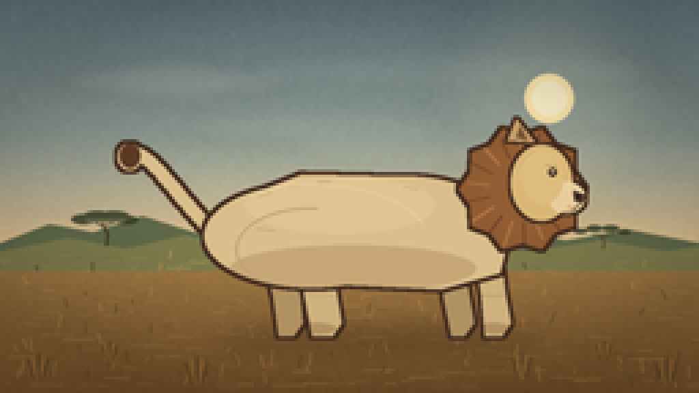
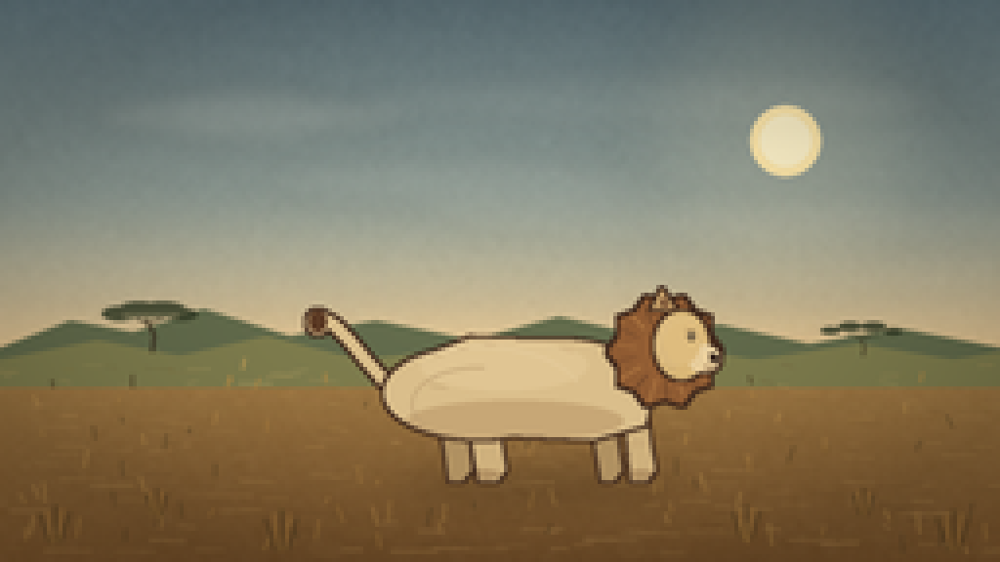

CODING AGENTS AS PIXEL WORLD MODELS
traex/DeepSeek-V4.1-Flash · instance_preservation_0052
点击播放 · 原生 RGB 像素
逐轮保存的候选
回放视频、检查图与代码变化。
每份候选均可单独播放。实际图片检查记录在下方工具轨迹中。
候选 01播放与检查图
点击播放 · 原生 RGB 像素


展开代码变化
--- 上一保存版本
+++ 本次保存版本
@@ -0,0 +1,452 @@
+from pathlib import Path
+import math
+import random
+
+import numpy as np
+from PIL import Image, ImageChops, ImageDraw, ImageFilter
+
+import artifact_io
+
+
+W, H = 256, 144
+N, FPS = 20, 4
+SS = 4
+CW, CH = W * SS, H * SS
+ROOT = Path(__file__).resolve().parent
+
+SKY_TOP = np.array([100, 121, 128], dtype=float)
+SKY_MID = np.array([179, 184, 164], dtype=float)
+SKY_LOW = np.array([234, 199, 144], dtype=float)
+GROUND_TOP = np.array([177, 137, 78], dtype=float)
+GROUND_LOW = np.array([119, 82, 43], dtype=float)
+
+
+def px(x, y):
+ return round(x * SS), round(y * SS)
+
+
+def box(x0, y0, x1, y1):
+ return (*px(x0, y0), *px(x1, y1))
+
+
+def polygon(points):
+ return [px(x, y) for x, y in points]
+
+
+def smoothstep(t):
+ t = max(0.0, min(1.0, t))
+ return t * t * (3.0 - 2.0 * t)
+
+
+def make_background():
+ yy = np.arange(CH, dtype=float)[:, None]
+ yn = yy / (CH - 1)
+ arr = np.zeros((CH, CW, 3), dtype=float)
+
+ horizon = 0.635
+ upper = np.clip(yn / horizon, 0.0, 1.0)
+ lower = np.clip((yn - horizon) / (1.0 - horizon), 0.0, 1.0)
+ for c in range(3):
+ sky = SKY_TOP[c] + (SKY_MID[c] - SKY_TOP[c]) * upper
+ sky = sky + (SKY_LOW[c] - sky) * np.clip((upper - 0.52) / 0.48, 0.0, 1.0) ** 1.5
+ ground = GROUND_TOP[c] + (GROUND_LOW[c] - GROUND_TOP[c]) * lower ** 0.72
+ arr[:, :, c] = np.where(yn < horizon, sky, ground)
+
+ rng = np.random.default_rng(19)
+ grain = rng.normal(0.0, 2.2, (CH, CW, 1))
+ broad = rng.normal(0.0, 1.0, (CH // 8 + 1, CW // 8 + 1))
+ broad = np.asarray(
+ Image.fromarray(((broad - broad.min()) / (np.ptp(broad) + 1e-6) * 255).astype(np.uint8))
+ .resize((CW, CH), Image.Resampling.BICUBIC)
+ ).astype(float)
+ arr += grain + (broad - broad.mean())[:, :, None] * 0.035
+ image = Image.fromarray(np.clip(arr, 0, 255).astype(np.uint8), "RGB").convert("RGBA")
+
+ glow = Image.new("RGBA", (CW, CH), (0, 0, 0, 0))
+ gd = ImageDraw.Draw(glow)
+ sx, sy = px(201, 36)
+ for radius, alpha in ((42, 16), (29, 24), (19, 35)):
+ gd.ellipse((sx - radius * SS, sy - radius * SS, sx + radius * SS, sy + radius * SS),
+ fill=(255, 234, 180, alpha))
+ glow = glow.filter(ImageFilter.GaussianBlur(9 * SS))
+ image.alpha_composite(glow)
+ d = ImageDraw.Draw(image, "RGBA")
+ d.ellipse(box(192, 27, 210, 45), fill=(255, 232, 171, 205))
+ d.ellipse(box(194.5, 29.5, 207.5, 42.5), fill=(255, 243, 202, 230))
+
+ cloud = Image.new("RGBA", (CW, CH), (0, 0, 0, 0))
+ cd = ImageDraw.Draw(cloud, "RGBA")
+ cloud_specs = [
+ (22, 24, 105, 35, 34),
+ (79, 42, 155, 51, 20),
+ (142, 20, 197, 31, 17),
+ (158, 52, 235, 61, 14),
+ ]
+ for x0, y0, x1, y1, alpha in cloud_specs:
+ cd.ellipse(box(x0, y0, x1, y1), fill=(245, 231, 205, alpha))
+ cd.ellipse(box((x0 + x1) * 0.28, y0 - 2, (x0 + x1) * 0.72, y1 + 2),
+ fill=(247, 234, 210, alpha - 4))
+ cloud = cloud.filter(ImageFilter.GaussianBlur(3.0 * SS))
+ image.alpha_composite(cloud)
+
+ haze = Image.new("RGBA", (CW, CH), (0, 0, 0, 0))
+ hd = ImageDraw.Draw(haze, "RGBA")
+ hd.rectangle(box(0, 78, W, 96), fill=(238, 207, 158, 18))
+ haze = haze.filter(ImageFilter.GaussianBlur(5 * SS))
+ image.alpha_composite(haze)
+
+ d = ImageDraw.Draw(image, "RGBA")
+ d.polygon(polygon([(0, 89), (18, 82), (34, 85), (52, 79), (74, 86), (96, 82),
+ (121, 87), (143, 81), (165, 86), (184, 83), (207, 88),
+ (230, 84), (256, 89), (256, 97), (0, 97)]),
+ fill=(100, 109, 77, 110))
+ d.polygon(polygon([(0, 92), (25, 87), (46, 91), (68, 86), (92, 92), (119, 89),
+ (144, 93), (169, 88), (193, 92), (220, 88), (244, 92),
+ (256, 90), (256, 99), (0, 99)]),
+ fill=(129, 127, 79, 88))
+
+ ground = Image.new("RGBA", (CW, CH), (0, 0, 0, 0))
+ gd = ImageDraw.Draw(ground, "RGBA")
+ grng = random.Random(31)
+ for _ in range(330):
+ y = grng.uniform(93, 143)
+ x = grng.uniform(-4, W + 4)
+ length = grng.uniform(1.5, 12) * (0.65 + (y - 92) / 90)
+ col = grng.choice([
+ (224, 180, 105, grng.randint(24, 56)),
+ (98, 68, 34, grng.randint(22, 52)),
+ (241, 200, 124, grng.randint(18, 40)),
+ (143, 112, 55, grng.randint(22, 46)),
+ ])
+ gd.line([px(x, y), px(x + length, y + grng.uniform(-0.8, 0.8))],
+ fill=col, width=max(1, round(SS * (0.55 + (y - 92) / 115))))
+ for _ in range(105):
+ x = grng.uniform(0, W)
+ y = grng.uniform(94, 142)
+ height = grng.uniform(1.3, 5.2) * (0.55 + (y - 94) / 80)
+ col = grng.choice([(73, 58, 31, 100), (194, 145, 69, 90), (224, 174, 91, 80)])
+ gd.line([px(x, y), px(x + grng.uniform(-1.5, 1.5), y - height)],
+ fill=col, width=max(1, round(0.65 * SS)))
+ image.alpha_composite(ground)
+
+ draw_acacia(image, 39, 90, 0.82)
+ draw_acacia(image, 221, 91, 0.46)
+ draw_grass_tufts(image)
+
+ yy2 = np.arange(CH, dtype=float)[:, None]
+ xx2 = np.arange(CW, dtype=float)[None, :]
+ nx = (xx2 - CW / 2) / (CW / 2)
+ ny = (yy2 - CH / 2) / (CH / 2)
+ vignette = np.clip(1.0 - 0.16 * (nx * nx + ny * ny) ** 1.15, 0.80, 1.0)
+ rgb = np.asarray(image.convert("RGB")).astype(float) * vignette[:, :, None]
+ return Image.fromarray(np.clip(rgb, 0, 255).astype(np.uint8), "RGB").convert("RGBA")
+
+
+def draw_acacia(image, x, ground_y, scale):
+ layer = Image.new("RGBA", (CW, CH), (0, 0, 0, 0))
+ d = ImageDraw.Draw(layer, "RGBA")
+ trunk = [(x, ground_y), (x + 0.5 * scale, ground_y - 5 * scale),
+ (x - 1.8 * scale, ground_y - 10 * scale)]
+ d.line([px(px_x, px_y) for px_x, px_y in trunk],
+ fill=(63, 54, 35, 205), width=max(1, round(1.25 * scale * SS)))
+ branch_y = ground_y - 9.5 * scale
+ d.line([px(x - 1.4 * scale, branch_y + 1.0 * scale), px(x - 6 * scale, branch_y - 1.5 * scale)],
+ fill=(63, 54, 35, 205), width=max(1, round(0.8 * scale * SS)))
+ d.line([px(x - 1.2 * scale, branch_y + 0.6 * scale), px(x + 5 * scale, branch_y - 1.8 * scale)],
+ fill=(63, 54, 35, 205), width=max(1, round(0.8 * scale * SS)))
+ for cx, cy, rx, ry in (
+ (x - 8.5, branch_y - 2.0, 5.5, 2.1),
+ (x - 3.5, branch_y - 3.0, 6.5, 2.5),
+ (x + 2.5, branch_y - 3.1, 7.0, 2.4),
+ (x + 7.5, branch_y - 1.7, 5.0, 1.9),
+ ):
+ d.ellipse(box(cx - rx * scale, cy - ry * scale, cx + rx * scale, cy + ry * scale),
+ fill=(58, 66, 43, 220))
+ d.rectangle(box(x - 9 * scale, branch_y - 2.0 * scale, x + 8 * scale, branch_y - 1.2 * scale),
+ fill=(65, 72, 45, 150))
+ image.alpha_composite(layer)
+
+
+def draw_grass_tufts(image):
+ layer = Image.new("RGBA", (CW, CH), (0, 0, 0, 0))
+ d = ImageDraw.Draw(layer, "RGBA")
+ tufts = [
+ (14, 139, 11, 0.95), (40, 132, 8, 0.85), (72, 141, 12, 0.95),
+ (191, 138, 10, 0.9), (221, 132, 8, 0.8), (244, 141, 12, 0.95),
+ ]
+ for x, y, size, strength in tufts:
+ for i, dx in enumerate((-0.65, -0.32, 0.0, 0.3, 0.62)):
+ height = size * (0.58 + 0.3 * (1 - abs(dx)))
+ lean = dx * size * 0.55
+ color = (75, 57, 29, int(150 * strength)) if i % 2 == 0 else (183, 132, 60, int(130 * strength))
+ d.line([px(x + dx * size * 0.2, y), px(x + lean, y - height)],
+ fill=color, width=max(1, round(SS * 0.75)))
+ image.alpha_composite(layer)
+
+
+def solid_layer(color, mask):
+ layer = Image.new("RGBA", (CW, CH), color)
+ layer.putalpha(mask)
+ return layer
+
+
+def make_mask(primitives):
+ mask = Image.new("L", (CW, CH), 0)
+ d = ImageDraw.Draw(mask)
+ for kind, data in primitives:
+ if kind == "ellipse":
+ d.ellipse(data, fill=255)
+ elif kind == "polygon":
+ d.polygon(data, fill=255)
+ elif kind == "line":
+ points, width = data
+ d.line(points, fill=255, width=width, joint="curve")
+ return mask
+
+
+def paste_group(base, primitives, fill, outline, outline_width):
+ mask = make_mask(primitives)
+ if outline_width > 0:
+ size = max(3, int(round(outline_width * SS * 2 + 1)))
+ if size % 2 == 0:
+ size += 1
+ grown = mask.filter(ImageFilter.MaxFilter(size))
+ base.alpha_composite(solid_layer(outline, grown))
+ base.alpha_composite(solid_layer(fill, mask))
+ return mask
+
+
+def clipped_detail(base, mask, draw_fn):
+ layer = Image.new("RGBA", (CW, CH), (0, 0, 0, 0))
+ draw_fn(ImageDraw.Draw(layer, "RGBA"), layer)
+ alpha = ImageChops.multiply(layer.getchannel("A"), mask)
+ layer.putalpha(alpha)
+ base.alpha_composite(layer)
+
+
+def bezier(points, count=30):
+ p0, p1, p2, p3 = points
+ out = []
+ for i in range(count + 1):
+ t = i / count
+ u = 1.0 - t
+ out.append((
+ u ** 3 * p0[0] + 3 * u * u * t * p1[0] + 3 * u * t * t * p2[0] + t ** 3 * p3[0],
+ u ** 3 * p0[1] + 3 * u * u * t * p1[1] + 3 * u * t * t * p2[1] + t ** 3 * p3[1],
+ ))
+ return out
+
+
+def draw_lion(image, frame):
+ t = max(0.0, min(1.0, (frame - 1) / 17.0))
+ scale = 1.0 - 0.70 * smoothstep(t)
+ ax, gy = 136.0, 123.0
+ bob = 0.45 * math.sin(frame * 0.72) * scale
+ tail_sway = math.sin(frame * 0.62 + 0.4)
+ ear_flick = max(0.0, math.sin((frame - 10) * 0.8)) * 1.2 if frame >= 10 else 0.0
+
+ def P(x, y):
+ return px(ax + x * scale, gy + (y + bob) * scale)
+
+ def B(x0, y0, x1, y1):
+ return (*P(x0, y0), *P(x1, y1))
+
+ def Poly(points):
+ return [P(x, y) for x, y in points]
+
+ shadow = Image.new("RGBA", (CW, CH), (0, 0, 0, 0))
+ sd = ImageDraw.Draw(shadow, "RGBA")
+ sw = (164 + 18 * scale) * scale
+ sx = ax + 4 * scale
+ sy = gy + 1.4
+ sd.ellipse((round((sx - sw / 2) * SS), round((sy - 5 * scale) * SS),
+ round((sx + sw / 2) * SS), round((sy + 5 * scale) * SS)),
+ fill=(58, 38, 23, 82))
+ shadow = shadow.filter(ImageFilter.GaussianBlur(4.0 * SS))
+ image.alpha_composite(shadow)
+
+ outline = (65, 42, 29, 255)
+ body_col = (218, 190, 139, 255)
+ body_light = (233, 210, 164, 255)
+ body_dark = (173, 139, 91, 255)
+ far_col = (176, 145, 97, 255)
+ near_col = (207, 177, 125, 255)
+ mane_col = (143, 91, 50, 255)
+ mane_dark = (107, 67, 40, 255)
+ mane_light = (181, 124, 69, 255)
+ ow = max(0.72, 1.75 * scale)
+
+ tail_pts = bezier([
+ (-84, -55),
+ (-104 - 2 * tail_sway, -73),
+ (-122 - 3 * tail_sway, -103),
+ (-129 + 2 * tail_sway, -97 + 1.5 * tail_sway),
+ ], 34)
+ tail_mask = paste_group(
+ image,
+ [
+ ("line", ([P(x, y) for x, y in tail_pts], max(2, round(7.5 * scale * SS)))),
+ ("ellipse", B(-136 + 2 * tail_sway, -103 + 1.5 * tail_sway,
+ -123 + 2 * tail_sway, -89 + 1.5 * tail_sway)),
+ ],
+ body_col, outline, ow,
+ )
+ clipped_detail(image, tail_mask, lambda d, layer: d.ellipse(
+ B(-135 + 2 * tail_sway, -103 + 1.5 * tail_sway,
+ -124 + 2 * tail_sway, -90 + 1.5 * tail_sway),
+ fill=(91, 57, 35, 255)))
+
+ far_legs = [
+ ("polygon", Poly([(-59, -48), (-45, -48), (-39, -26), (-37, -7),
+ (-42, 0), (-50, 0), (-53, -21)])),
+ ("polygon", Poly([(35, -48), (49, -48), (52, -24), (55, -7),
+ (50, 0), (43, 0), (39, -20)])),
+ ]
+ far_mask = paste_group(image, far_legs, far_col, outline, ow)
+ clipped_detail(image, far_mask, lambda d, layer: (
+ d.line([P(-57, -32), P(-44, -31)], fill=(136, 107, 70, 110),
+ width=max(1, round(0.8 * scale * SS))),
+ d.line([P(37, -31), P(50, -31)], fill=(136, 107, 70, 110),
+ width=max(1, round(0.8 * scale * SS))),
+ ))
+
+ near_legs = [
+ ("polygon", Poly([(-41, -50), (-25, -50), (-19, -25), (-16, -7),
+ (-21, 0), (-32, 0), (-36, -21)])),
+ ("polygon", Poly([(55, -50), (69, -49), (72, -23), (75, -7),
+ (70, 0), (61, 0), (59, -21)])),
+ ]
+ near_mask = paste_group(image, near_legs, near_col, outline, ow)
+ clipped_detail(image, near_mask, lambda d, layer: (
+ d.ellipse(B(-40, -7, -19, -1), fill=(147, 111, 72, 120)),
+ d.ellipse(B(57, -7, 75, -1), fill=(147, 111, 72, 120)),
+ d.line([P(-39, -23), P(-21, -22)], fill=(166, 128, 84, 120),
+ width=max(1, round(0.85 * scale * SS))),
+ d.line([P(57, -22), P(73, -22)], fill=(166, 128, 84, 120),
+ width=max(1, round(0.85 * scale * SS))),
+ ))
+
+ body_prims = [
+ ("ellipse", B(-90, -82, 25, -26)),
+ ("ellipse", B(-35, -86, 72, -27)),
+ ("polygon", Poly([(-76, -72), (-37, -87), (17, -86), (53, -76),
+ (74, -55), (69, -34), (37, -25), (-49, -29), (-82, -48)])),
+ ]
+ body_mask = paste_group(image, body_prims, body_col, outline, ow)
+
+ def body_detail(d, layer):
+ d.ellipse(B(-76, -49, 56, -24), fill=(158, 119, 75, 82))
+ d.ellipse(B(-68, -86, 34, -55), fill=(241, 218, 173, 62))
+ d.arc(B(-94, -82, 31, -20), 202, 342, fill=(247, 227, 185, 105),
+ width=max(1, round(1.0 * scale * SS)))
+ d.arc(B(-73, -69, 7, -24), 72, 276, fill=(121, 87, 56, 74),
+ width=max(1, round(1.0 * scale * SS)))
+ d.line([P(-62, -58), P(-52, -57)], fill=(126, 91, 55, 110),
+ width=max(1, round(0.8 * scale * SS)))
+ for x0, y0, x1, y1 in ((-61, -75, -54, -77), (-45, -80, -39, -81),
+ (-29, -83, -22, -83), (17, -81, 25, -79)):
+ d.line([P(x0, y0), P(x1, y1)], fill=(143, 104, 64, 85),
+ width=max(1, round(0.7 * scale * SS)))
+ clipped_detail(image, body_mask, body_detail)
+
+ mane_center = (81.0, -79.0)
+ mane_points = []
+ for i in range(20):
+ angle = 2 * math.pi * i / 20
+ radius = 34.0 if i % 2 == 0 else 29.0
+ mane_points.append((mane_center[0] + math.cos(angle) * radius,
+ mane_center[1] + math.sin(angle) * radius))
+ mane_mask = paste_group(
+ image,
+ [("polygon", Poly(mane_points)),
+ ("ellipse", B(53, -108, 108, -52))],
+ mane_col, outline, max(0.85, 1.9 * scale),
+ )
+
+ def mane_detail(d, layer):
+ d.ellipse(B(59, -104, 105, -55), fill=(151, 97, 52, 96))
+ for i in range(18):
+ angle = 2 * math.pi * i / 18 + 0.13
+ r0, r1 = 18.0, 32.0 if i % 3 else 29.0
+ x0 = mane_center[0] + math.cos(angle) * r0
+ y0 = mane_center[1] + math.sin(angle) * r0
+ x1 = mane_center[0] + math.cos(angle) * r1
+ y1 = mane_center[1] + math.sin(angle) * r1
+ d.line([P(x0, y0), P(x1, y1)],
+ fill=mane_light if i % 2 else mane_dark,
+ width=max(1, round(1.0 * scale * SS)))
+ clipped_detail(image, mane_mask, mane_detail)
+
+ ear_shift = ear_flick
+ ear_mask = paste_group(
+ image,
+ [("polygon", Poly([(73, -105), (78 + ear_shift, -117), (88, -104)]))],
+ (196, 158, 103, 255), outline, max(0.65, 1.25 * scale),
+ )
+ clipped_detail(image, ear_mask, lambda d, layer: d.polygon(
+ Poly([(78, -107), (80 + ear_shift, -113), (84, -105)]),
+ fill=(104, 66, 42, 210)))
+
+ head_prims = [
+ ("ellipse", B(75, -103, 108, -62)),
+ ("ellipse", B(94, -83, 115, -66)),
+ ]
+ head_mask = paste_group(image, head_prims, (218, 183, 119, 255), outline, max(0.75, 1.55 * scale))
+
+ blink = 0.34 if frame == 8 else 0.0
+
+ def head_detail(d, layer):
+ d.ellipse(B(96, -83, 116, -65), fill=(235, 211, 165, 230))
+ d.ellipse(B(98, -78, 114, -65), fill=(241, 221, 180, 150))
+ d.ellipse(B(81, -100, 103, -71), fill=(227, 195, 136, 100))
+ d.arc(B(79, -99, 108, -64), 190, 307, fill=(239, 213, 164, 90),
+ width=max(1, round(0.9 * scale * SS)))
+ eye_y = -88 + blink * 0.5
+ if blink:
+ d.line([P(94, eye_y), P(99, eye_y + 0.5)], fill=(49, 34, 25, 255),
+ width=max(1, round(1.05 * scale * SS)))
+ else:
+ d.ellipse(B(95, -90.5, 99.5, -86), fill=(50, 36, 26, 255))
+ d.ellipse(B(96.7, -89.4, 98.2, -87.8), fill=(240, 218, 169, 230))
+ d.line([P(93.5, -92.2), P(99.5, -91.4)], fill=(108, 74, 47, 150),
+ width=max(1, round(0.7 * scale * SS)))
+ d.polygon(Poly([(108.8, -78.1), (115.2, -75.7), (113.8, -71.8),
+ (109.1, -72.8)]), fill=(56, 39, 31, 255))
+ d.line([P(112.5, -71.8), P(108.5, -67.6), P(102.5, -66.1)],
+ fill=(91, 61, 43, 255), width=max(1, round(0.8 * scale * SS)))
+ d.line([P(107.5, -66.1), P(104.0, -64.2)], fill=(113, 78, 52, 180),
+ width=max(1, round(0.65 * scale * SS)))
+ for x, y in ((108, -69.5), (110, -67.2), (105.8, -70.3)):
+ d.ellipse(B(x, y, x + 0.8, y + 0.8), fill=(108, 74, 49, 180))
+ for y in (-74.0, -70.0):
+ d.line([P(113.0, y), P(117.3, y + 0.5)],
+ fill=(245, 226, 183, 130), width=max(1, round(0.45 * scale * SS)))
+ clipped_detail(image, head_mask, head_detail)
+
+ for x0, y0, x1, y1 in (
+ (23, 127, 30, 134), (79, 138, 88, 143), (158, 136, 165, 143),
+ (205, 129, 212, 136),
+ ):
+ layer = Image.new("RGBA", (CW, CH), (0, 0, 0, 0))
+ d = ImageDraw.Draw(layer, "RGBA")
+ d.ellipse(box(x0, y0, x1, y1), fill=(108, 77, 42, 105))
+ image.alpha_composite(layer)
+
+
+def make_frame(background, frame):
+ image = background.copy()
+ draw_lion(image, frame)
+ rgb = image.convert("RGB")
+ rgb = rgb.filter(ImageFilter.GaussianBlur(0.22 * SS))
+ return np.asarray(rgb.resize((W, H), Image.Resampling.LANCZOS)).copy()
+
+
+def main():
+ background = make_background()
+ frames = np.stack([make_frame(background, i) for i in range(N)])
+ artifact_io.save(frames, ROOT)
+ print(f"saved {N} frames to {ROOT}")
+
+
+if __name__ == "__main__":
+ main()
候选 02播放与检查图
点击播放 · 原生 RGB 像素


展开代码变化
--- 上一保存版本
+++ 本次保存版本
@@ -239,7 +239,7 @@
def draw_lion(image, frame):
t = max(0.0, min(1.0, (frame - 1) / 17.0))
- scale = 1.0 - 0.70 * smoothstep(t)
+ scale = 1.0 - 0.58 * smoothstep(t)
ax, gy = 136.0, 123.0
bob = 0.45 * math.sin(frame * 0.72) * scale
tail_sway = math.sin(frame * 0.62 + 0.4)
@@ -358,13 +358,12 @@
mane_center[1] + math.sin(angle) * radius))
mane_mask = paste_group(
image,
- [("polygon", Poly(mane_points)),
- ("ellipse", B(53, -108, 108, -52))],
+ [("polygon", Poly(mane_points))],
mane_col, outline, max(0.85, 1.9 * scale),
)
def mane_detail(d, layer):
- d.ellipse(B(59, -104, 105, -55), fill=(151, 97, 52, 96))
+ d.ellipse(B(61, -101, 104, -57), fill=(151, 97, 52, 82))
for i in range(18):
angle = 2 * math.pi * i / 18 + 0.13
r0, r1 = 18.0, 32.0 if i % 3 else 29.0
@@ -396,6 +395,9 @@
blink = 0.34 if frame == 8 else 0.0
def head_detail(d, layer):
+ d.ellipse(B(66, -101, 91, -62), fill=(205, 172, 119, 95))
+ d.ellipse(B(75, -100, 99, -70), fill=(219, 188, 132, 155))
+ d.ellipse(B(80, -99, 96, -76), fill=(224, 193, 138, 135))
d.ellipse(B(96, -83, 116, -65), fill=(235, 211, 165, 230))
d.ellipse(B(98, -78, 114, -65), fill=(241, 221, 180, 150))
d.ellipse(B(81, -100, 103, -71), fill=(227, 195, 136, 100))
可观测工具轨迹
实际执行的命令与返回图片。
命令 1exit 0
/bin/bash -c "pwd && rg --files -g 'prompt.txt' -g 'GENERATION_RULES.md' -g 'task_spec.json' -g '"'!node_modules'"' -g '"'!vendor'"'"
命令 2exit 0
/bin/bash -c "ls -la && find . -maxdepth 2 -type f | sed 's#"'^./##'"' | sort | head -200"
命令 3exit 0
/bin/bash -c 'cat GENERATION_RULES.md'
命令 4exit 0
/bin/bash -c "cat task_spec.json && printf '\\n--- prompt ---\\n' && cat prompt.txt"
命令 5exit 0
/bin/bash -c "sed -n '1,240p' artifact_io.py && printf '\\n--- player ---\\n' && sed -n '1,260p' player_template.html"
命令 6exit 0
/bin/bash -c "python - <<'PY'
import sys
try:
import PIL; print('PIL', PIL.__version__)
except Exception as e: print('no PIL',e)
try:
import numpy; print('numpy',numpy.__version__)
except Exception as e: print('no numpy',e)
PY
which ffmpeg || true
which python"命令 7exit 1
/bin/bash -c 'python generate.py'
命令 8exit 1
/bin/bash -c 'python generate.py'
命令 9exit 0
/bin/bash -c 'python generate.py'
命令 10exit 0
/bin/bash -c "python - <<'PY'
from PIL import Image
import numpy as np
for i in [0,1,9,18,19]:
im=np.array(Image.open(f'frames/{i:02d}.png'))
print(i, im.shape, im.min(), im.max(), im.mean(axis=(0,1)))
PY"命令 11exit 0
/bin/bash -c "python - <<'PY'
from PIL import Image
for i in [0,9,19]:
im=Image.open(f'frames/{i:02d}.png')
im.resize((1024,576), Image.Resampling.NEAREST).save(f'.tmp/frame_{i:02d}_large.png')
PY"命令 12exit 0
/bin/bash -c 'python generate.py'
命令 13exit 0
/bin/bash -c "python - <<'PY'
from PIL import Image
for i in [0,9,19]:
Image.open(f'frames/{i:02d}.png').resize((1024,576), Image.Resampling.NEAREST).save(f'.tmp/frame_{i:02d}_large.png')
PY"命令 14exit 0
/bin/bash -c "python - <<'PY'
from pathlib import Path
import json, re
import numpy as np
from PIL import Image
root=Path('.')
frames=sorted((root/'frames').glob('*.png'))
arr=np.stack([np.array(Image.open(p)) for p in frames])
print('frame_files',len(frames),'shape',arr.shape,'dtype',arr.dtype)
print('unique_consecutive',sum(not np.array_equal(arr[i],arr[i-1]) for i in range(1,len(arr))), '/', len(arr)-1)
print('mean_abs_consecutive_change', np.mean([np.abs(arr[i].astype(int)-arr[i-1]).mean() for i in range(1,len(arr))]))
npz=np.load(root/'pixels.npz')
print('pixels_shape',npz['pixels'].shape,'pixels_dtype',npz['pixels'].dtype)
html=(root/'index.html').read_text()
print('html_bytes',len(html),'has_ready', 'window.__pixelReady=true' in html,'has_caption', 'A beige lion changes from big to small.' in html)
print('sheet',Image.open(root/'inspection.png').size,'transition',Image.open(root/'transition_check.png').size)
PY"视觉工具实际返回图片 1

视觉工具实际返回图片 2

视觉工具实际返回图片 3

视觉工具实际返回图片 4

视觉工具实际返回图片 5

视觉工具实际返回图片 6

视觉工具实际返回图片 7
保存候选 2 份；完成命令 14 次；可验证图片返回 7 张。原始 API 响应与完整日志保留在本地。